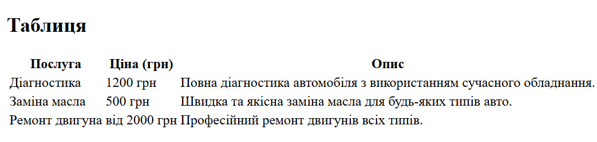
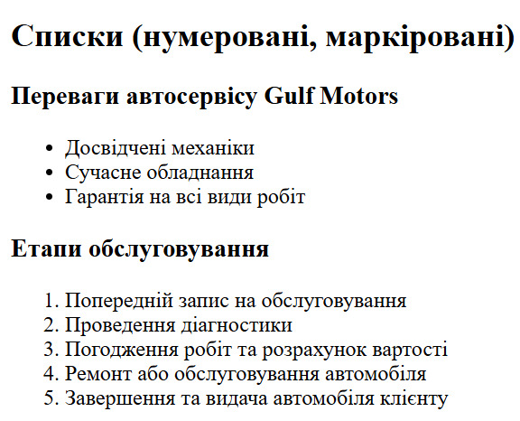

Опис предметного середовища
Тема: Створення веб-сайту для автосервісу "Gulf Motors".
Мета проєкту:
Забезпечити зручний спосіб взаємодії клієнта та автосервісу. Це включає он-лайн запис, доступ до списку послуг та їх вартість, можливість читати відгуки.
Сценарій використання сайту для клієнтів:
- Клієнт переглядає інформацію про автосервіс. Клієнт переглядає інформацію про послуги. Клієнт вивчає ціни на дані послуги. Клієнт передивляється відгуки. Клієнт робить запис на конкретну послугу та день.
Тема: Структура HTML-документа. Вибір предметної галузі. робота з посиланнями, таблицями, зображеннями, списками в html-документі.
Мета: придбати практичні навички роботи з HTML-документом, таблицями, зображеннями, посиланнями, списками, формами Створити шаблон звітного HTML-документом для відображення результатів роботи всіх лабораторних робіт.
Посилання на живу веб-сторінку Посилання на веб-сторінкуПосилання на живу сторінку звітного HTML документа Посилання на сторінку звітного HTML документа
Посилання на живу сторінку з самостійними роботами Посилання на сторінку з самостійними роботами
СТРУКТУРА ДОКУМЕНТА
<!DOCTYPE html>
<html lang="uk">
<head>
<meta charset="UTF-8">
<meta name="viewport" content="width=device-width, initial-scale=1.0">
<title>Головна сторінка готелю</title>
</head>
<body>
<main>
<section>
<h2>Зображення</h2>
<img src="Gulf Motors.jpg" alt="Логотип автосервісу" width="300" height="100">
</section>
<section>
<h2>Таблиця</h2>
<table>
<tr>
<th>Послуга</th>
<th>Ціна (грн)</th>
<th>Опис</th>
</tr>
<tr>
<td>Діагностика</td>
<td>1200 грн</td>
<td>Повна діагностика автомобіля з використанням сучасного обладнання.</td>
</tr>
<tr>
<td>Заміна масла</td>
<td>500 грн</td>
<td>Швидка та якісна заміна масла для будь-яких видів авто.</td>
</tr>
<tr>
<td>Ремонт двигуна</td>
<td>від 2000 грн</td>
<td>Професійний ремонт двигунів всіх видів.</td>
</tr>
</table>
</section>
<section>
<h2>Списки (нумеровані, маркіровані)</h2>
<h3>Переваги автосервісу "Gulf Motors"</h3>
<ul>
<li>Досвідчені механіки</li>
<li>Сучасне обладнання</li>
<li>Гарантія на всі види робіт</li>
</ul>
<h3>Етапи обслуговування</h3>
<ol>
<li>Попередній запис на обслуговування</li>
<li>Проведення діагностики</li>
<li>Погодження робіт та розрахунок вартості</li>
<li>Ремонт або обслуговування автомобіля</li>
<li>Завершення та видача автомобіля клієнту</li>
</ol>
</section>
</main>
</body>
</html>HTML-код таблиці
<table>
<tr>
<th>Послуга</th>
<th>Ціна (грн)</th>
<th>Опис</th>
</tr>
<tr>
<td>Діагностика</td>
<td>1200 грн</td>
<td>Повна діагностика автомобіля з використанням сучасного обладнання.</td>
</tr>
<tr>
<td>Заміна масла</td>
<td>500 грн</td>
<td>Швидка та якісна заміна масла для будь-яких видів авто.</td>
</tr>
<tr>
<td>Ремонт двигуна</td>
<td>від 2000 грн</td>
<td>Професійний ремонт двигунів всіх видів.</td>
</tr>
</table>
Скріншот таблиці
Теорія про теги та атрибути, що застосовуються при створенні таблиць
Таблиці в HTML використовуються для організації даних у рядках і стовпцях. Основні теги для створення таблиць:
- <table>: Цей тег визначає саму таблицю.
- <tr>: Тег рядка таблиці. Використовується для створення нових рядків.
- <th>: Тег заголовка стовпця. Використовується для створення заголовків у таблиці. Заголовки за замовчуванням жирні і вирівняні по центру.
- <td>: Тег комірки таблиці. Використовується для заповнення даними комірок таблиці.
- Атрибути:
- colspan: Визначає кількість стовпців, які повинні бути об'єднані в одній комірці.
- rowspan: Визначає кількість рядків, які повинні бути об'єднані в одній комірці.
- border: Визначає товщину рамки таблиці.
- cellpadding: Визначає внутрішній відступ у комірках таблиці.
- cellspacing: Визначає відстань між комірками таблиці.
Приклад створення таблиці з об'єднанням комірок:
<table border="1">
<tr>
<th colspan="2">Послуга</th>
</tr>
<tr>
<td rowspan="2">Заміна масла</td>
<td>500 грн</td>
</tr>
<tr>
<td>Швидка та якісна заміна масла для будь-яких видів авто</td>
</tr>
</table>
HTML-код зображення
<section>
<h2>Зображення</h2>
<img src="Gulf Motors.jpg" alt="Зображення логотипу автосервісу" width="300" height="100">
</section>
Скріншот зображення

Теорія про атрибути тегу <img>
Тег <img> використовується для вставки зображень на веб-сторінку. Основні атрибути, що використовуються з цим тегом:
- src: Визначає шлях до зображення. Це обов'язковий атрибут.
- alt: Описує зображення. Використовується для доступності (наприклад, для користувачів з обмеженими можливостями) і з'являється, якщо зображення не може бути завантажене. Це обов'язковий атрибут.
- width: Визначає ширину зображення в пікселях або у відсотках. Може бути використаний для масштабування зображення.
- height: Визначає висоту зображення в пікселях або у відсотках. Може бути використаний для масштабування зображення.
- title: Показує підказку, яка з'являється, коли курсор миші наводиться на зображення.
Приклад використання атрибутів:
<img src="example.jpg" alt="Приклад зображення" width="450" height="150" title="Це приклад зображення">
HTML-код списків
<section>
<h2>Списки (нумеровані, маркіровані)</h2>
<h3>Переваги автосервісу "Gulf Motors"</h3>
<ul>
<li>Досвідчені механіки</li>
<li>Сучасне обладнання</li>
<li>Гарантія на всі види робіт</li>
</ul>
<h3>Етапи обслуговування</h3>
<ol>
<li>Попередній запис на обслуговування</li>
<li>Проведення діагностики</li>
<li>Погодження робіт та розрахунок вартості</li>
<li>Ремонт або обслуговування автомобіля</li>
<li>Завершення та видача автомобіля клієнту</li>
</ol>
</section>
Скріншот списків
Теорія про теги та атрибути списків
HTML підтримує два основні типи списків:
- Маркіровані списки (<ul>): використовуються для списків без порядкових номерів. Кожен елемент позначається тегом <li> і відображається з маркером за замовчуванням.
- Нумеровані списки (<ol>): використовуються для упорядкованих списків з номерами. Кожен елемент також позначається тегом <li>, а елементи автоматично нумеруються.
Основні атрибути списків:
- type: атрибут для <ol>, який дозволяє змінювати тип нумерації (наприклад, "1" для числового, "A" для алфавітного).
- start: для <ol> встановлює початковий номер нумерації.
- reversed: атрибут для <ol>, який дозволяє показувати нумерацію в зворотному порядку.
Висновок
Виконання лабораторної роботи дало базові знання для створення структурованих веб-сторінок із зручною навігацією та привабливим дизайном, що відповідають сучасним стандартам. У процесі роботи було розроблено шаблон HTML-документа для звітів, який стане основою для подальшого представлення результатів усіх лабораторних робіт.
Вивчивши структуру HTML-документа, було освоєно налаштування основних елементів, таких як заголовок, метадані, контентні секції та футер. Закріплення навичок роботи з тегами : table, img, a, ul, ol, li та form та їхніми атрибутами дозволило створити більш інформативні та структуровані веб-сторінки.
Отже, виконана лабораторна робота стала основою для подальшого розвитку навичок веб-розробки, закріпила знання про роботу з HTML-документом, таблицями, зображеннями, посиланнями, списками та формами, а також допомогла набути практичний досвід для розробки складніших веб-інтерфейсів.